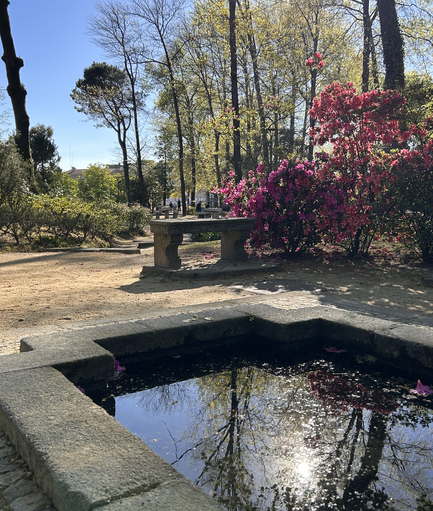

IRS
Date: 02/04/2026 17:23:07
Have you submitted your IRS declaration this year already?
The term to do that started yesterday and ends on June 30. I’ve submitted mine today. Last year, I received some money back in about a month (that I spent on my divorce, haha). This year, working as an independent contractor again, I will actually owe some money.

An article I use every year to look up how navigate the non-user-friendly system is this one: https://www.deco.proteste.pt/dinheiro/impostos/dicas/irs-ajudamos-preencher-passo-a-passo.
Saved my hide twice already, as my income is usually uncomplicated and hardly requires an accountant.
This year, in addition to Anexo B (for independent contractors), I had to fill out Anexo SS as well. Despite the suspicious abbreviation, it has nothing in common with snakes or last-century Germany, but stands for Segurança Social that I’ve been paying contributions to all year.
By the way, this blog now finally has RSS support: https://www.nataliia.me/feed.xml.